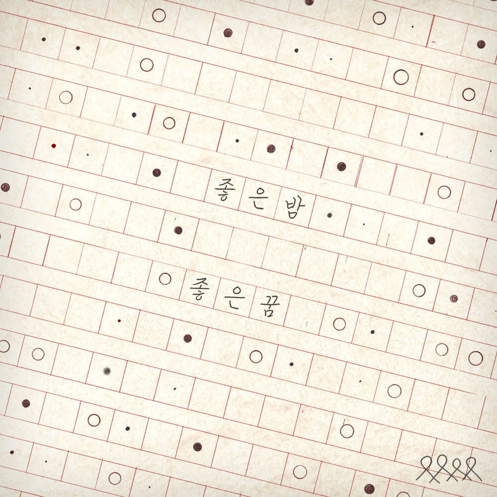

안녕하세요, 라보엠입니다.
오늘 소개해드릴 노래는 너드커넥션(Nerd Connection)의 ‘좋은 밤 좋은 꿈’인데요. 2020년 3월에 발매된 이 곡은 밴드가 처음으로 ‘사랑’을 정면에 내세운 싱글이기도 합니다. 최근에는 영화 〈오늘 밤, 세계에서 이 사랑이 사라진다 해도〉의 한국판에 삽입되면서, 마치 잊고 지내던 첫사랑의 편지를 다시 발견한 것처럼 많은 분의 가슴을 울리고 있습니다.

차가운 공기 속에 남은 온기
이 곡은 도입부부터 밤하늘의 이미지를 선명하게 그려냅니다.
“저 많은 별을 다 세어 보아도 / 그대 마음은 헤아릴 수 없어요 /
그대의 부서진 마음 조각들이 / 차갑게 흩어져 있는 탓에”
사랑하는 사람의 상처를 끝내 다 안아주지 못했다는 무력감, 그리고 그 미안함이 별빛처럼 흩어지는 기분이 듭니다. 특히 2절 가사 중 “시월의 서늘한 공기 속에도 장미향을 난 느낄 수가 있죠”라는 대목을 참 좋아해요. 이미 계절은 변했고 관계는 끝났지만, 함께했던 ‘빨갛던 밤’의 기억이 향기처럼 코끝에 남아있다는 표현이 너무도 아릿하게 다가오거든요.
음악적으로도 이 곡은 참 영리합니다. 밴드 사운드 특유의 고조되는 전개를 가지고 있지만, 보컬은 끝까지 울부짖지 않아요. 오히려 차분하고 덤덤하게 제 자리를 지킵니다. 그 절제된 목소리 덕분에 슬픔은 밖으로 터져 나오기보다, 듣는 이의 마음 깊은 곳으로 천천히 스며듭니다.
곡의 하이라이트인 후렴구는 마치 주문 같습니다.
“이제 내가 해줄 수 있는 건 / 좋은 밤 좋은 꿈 안녕”
붙잡을 수도, 되돌릴 수도 없는 이별 앞에서 우리가 할 수 있는 최선의 예의는 무엇일까요. 어쩌면 거창한 약속보다, 상대가 오늘 밤만큼은 괴롭지 않길 바라는 이 짧은 안사가 가장 깊은 사랑의 형태일지도 모르겠습니다.
맺음말
브릿지에서 고백하듯 읊조리는 “이름 모를 어떤 꽃말처럼 그대 곁에 남아 있을게요”라는 가사는 이 곡의 정점을 찍습니다. 우리의 서사는 여기서 끝나고 기록은 사라지겠지만, 당신을 향했던 나의 진심만은 이름 모를 꽃의 의미처럼 곁에 머물겠다는 다짐이죠.
누군가에게 더 이상 해줄 수 있는 게 안부와 작은 기도뿐인 밤이 있습니다. 그런 밤, 이 노래를 들으며 스스로에게도 인사를 건네보셨으면 좋겠어요.
오늘 밤, 어떤 기억이 당신을 찾아오든 마지막은 꼭 평온하기를 바랍니다.
좋은 밤, 좋은 꿈, 안녕.